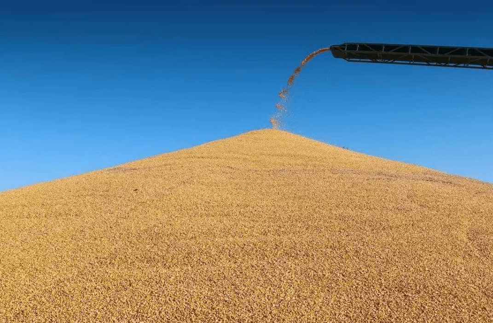

粮食在我国的战略地位究竟有多重要？
相信喜欢历史的人会明白这个道理，国家想要强盛，必须粮食充足。打仗粮食供应不足乃兵家大忌。那个朝代的建立不是拥有着大量的粮食，可以供应军队。如今，虽然世界在不断的提倡和平，但是各国之间都是存在着一定的矛盾的，一旦矛盾被放大，就会发生大规模的战争。而粮食就显得十分重要，国外切断粮食供应，国家将无法有效地维护国家安全。所以，粮食对于国防建设有着巨大的作用。
粮食可以帮助维护国家稳定 百姓是生活在最底层的，他们对于国家大事不会给予太大的帮助，他们往往还是比较关心粮食。粮食与百姓的生活关系密切， 一旦缺乏了粮食，百姓就可能会聚众发对政府的管理，不利于维护国家的稳定。所以，拥有足够的粮食就代表着能够实现一定的国家稳定。
粮食与国家经济息息相关,在古代，农业一直都是国家的根本大业，任何经济都与粮食脱不开关系。如今，虽然国家大力发展第二、第三产业，但是许多第二产业的根本还是要归根于粮食。粮食是部分企业的原材料，一旦缺乏粮食，企业将无法正常工作。充足的粮食可以保障经济的顺利发展。